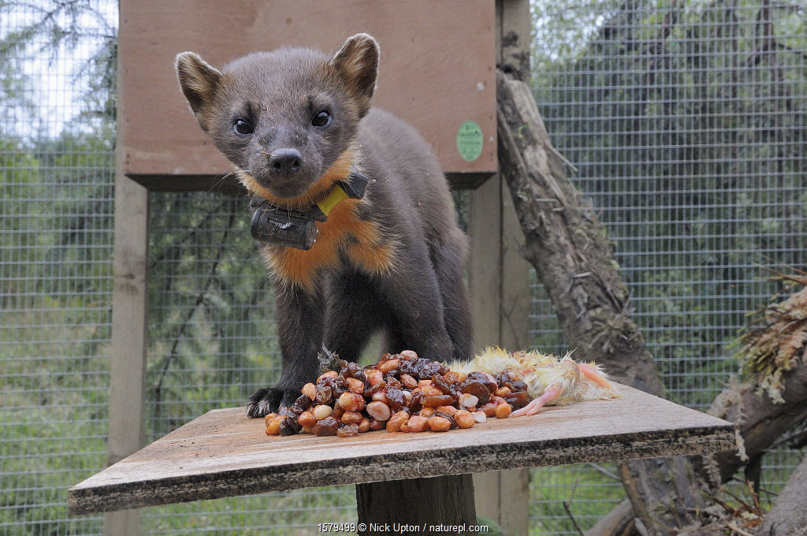
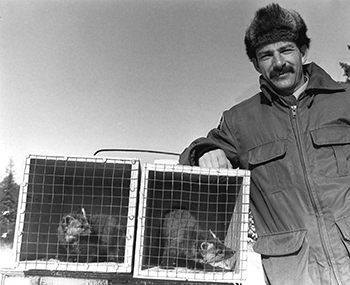

The American marten (Martes americana) was once a familiar presence in Pennsylvania. The small, agile forest mustelid that played an integral role in the ecological tapestry of our woodlands. Early naturalists described the species as agile, curious, and woven into the fabric of the state’s mountain ecosystems. But by the early 1900s, martens had vanished. Intensive logging, unregulated trapping, and widespread habitat loss carved the species out of the Commonwealth’s landscape long before modern wildlife protections existed. For decades, the marten lived only in memory and museum drawers. Yet biologists—especially those passionate about small carnivores—never let the story fully close. The marten’s absence became a symbol of both ecological loss and ecological opportunity.
The American marten is often described as small but mighty—an animal whose survival depends on healthy, structurally diverse forests. They weave through downed logs, dense understories, and multilayered canopies with fluid agility, using every nook and cranny for cover, foraging, and denning. Their diets range from voles and shrews to winter berries, insects, and occasional bird eggs, making them both predators and scavengers.
In Pennsylvania, many forest systems have matured in ways that now resemble prime marten habitat found in the Adirondacks, northern New England, and the Great Lakes states. High-elevation plateaus, mixed conifer–hardwood stands, and large tracts of public land offer a mosaic of habitats that could support a viable population. For biologists like Thomas Keller from the Pennsylvania Game Commission, these developing landscapes signaled something important: the ecological stage was quietly resetting itself. And with that, the idea of a marten reintroduction shifted from a distant dream to a scientifically grounded possibility.


Inspired by decades of research and management from neighboring states, the Pennsylvania Game Commission assembled a detailed feasibility assessment and reintroduction plan for the American marten—spearheaded and authored by wildlife biologist Thomas Keller. The plan envisioned restoring a native carnivore that once shaped forest food webs, while emphasizing long-term monitoring, responsible sourcing of founder populations, and careful protection of local ecosystems.
The report made clear: Pennsylvania is ecologically ready. The science is strong. The habitat is waiting. And the return of the marten represents not just a species recovery, but a reconnection with the state’s ecological heritage. Keller’s writing carried the optimism of a biologist who sees both what was and what could be—a reminder that conservation is, at its core, a story of second chances.  
Despite the strength of the science and overwhelming interest from the conservation community, the PGC ultimately decided to postpone moving forward with the marten reintroduction plan. The proposal is not gone—just placed on hold. The work, passion, and research behind it remain ready whenever the agency reopens the conversation.
For now, the future of the American marten in Pennsylvania sits at an exciting crossroads. Forest conditions continue to improve, public awareness is growing, and Keller’s blueprint for restoration stands prepared for the moment when the Commonwealth is ready. The marten’s story in Pennsylvania isn’t finished—just paused. And for many who care deeply about the state’s forests, the next chapter is still waiting to be written.